An interactive English-learning article · Friends, Season 3 · Engoo lesson folder
The One with the Jam: What a Classic Friends Episode Teaches About Boundaries, Breakups, and Real-World English
In the autumn of 1996, television audiences watched Monica Geller turn a broken heart into a small industrial operation, boiling berries in a kitchen that slowly vanished under hundreds of gleaming jars. Few viewers suspected that this episode — “The One with the Jam,” Season 3, Episode 3 — would one day travel from a nineties sitcom into a modern English classroom. The lesson deck explored in this article does exactly that: it takes twenty-two minutes of comedy and converts it into a structured workshop on boundaries, coping mechanisms, and real-world American English.
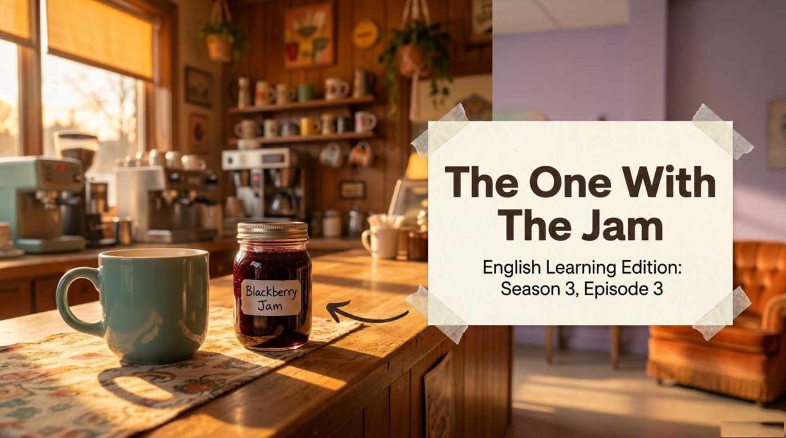
There is a second, quieter lesson hiding inside the material. Every page of the deck carries a small watermark in the corner announcing that it was assembled with an AI notebook tool, and the definitions, story summaries, and comprehension questions quoted throughout this article come directly from that AI-generated material. The reader therefore watches two things at once: three friends fumbling through very adult problems, and modern technology quietly turning entertainment into curriculum. Both spectacles reward close attention, and both make the vocabulary unusually easy to remember.
📺 The Episode, the Lesson, and the Language
The deck opens by framing the episode as a set of “real-life scenarios,” announcing its situation in plain terms: “Three friends face uncomfortable situations in their daily lives.” The theme slide then defines the two concepts that organize the entire lesson. Boundaries are described as “rules for how people treat us,” and coping mechanisms are described as “actions to deal with stress or sadness.” The stated goal is refreshingly concrete: “Learn real-world American English vocabulary by analyzing their choices.” In other words, the characters serve as harmless test dummies for life’s difficult moments, and every collision produces useful language.
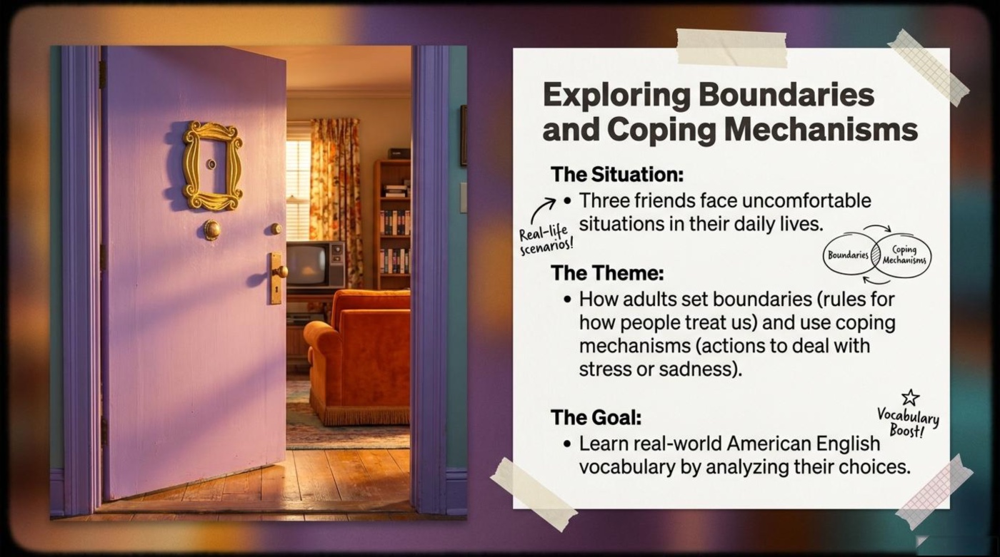
Remember the two key concepts. A boundary is a rule for how people may treat you, and a coping mechanism is an action you take to handle stress or sadness. The whole episode is a laboratory in which one character tests each idea — sometimes wisely, sometimes catastrophically.
Monica’s file: the jam plan
The first storyline belongs to Monica, and the deck presents it like a detective’s case file titled “The Jam Plan: Distraction from Heartbreak.” The file lists a clean two-step sequence. Step one, the trigger: “Breaking up with Richard.” Step two, the response: “Making massive amounts of jam.” The visual shows a kitchen island buried under an army of red, purple, and green jars, a cheerful-looking disaster that the material reads as a textbook coping mechanism in action. Her hands stay busy so that her heart does not have to.
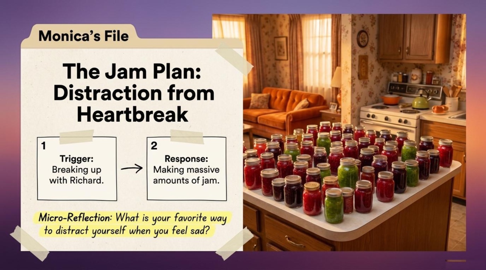
The deck attaches a micro-reflection to this file, inviting readers to name their favorite way to distract themselves when they feel sad. That small prompt is the material working exactly as designed: it converts a sitcom joke into a moment of honest self-observation. Later in the same storyline, the deck quotes Monica’s own mission statement, “I needed a plan to get over my man,” a sentence that smuggles the phrasal verb get over someone into a line short enough to memorize after one read.
Language tip. Pause any TV episode at a dramatic moment and describe the character’s situation in two sentences: the trigger and the response. This tiny habit trains you to use cause-and-effect language — after, because, so, instead of — which is the skeleton of natural storytelling in English.
The pivot: from jam to babies
When the jam economics collapse, the storyline takes a sharp turn that the deck calls “The Pivot: From Jam to Babies.” The summary is wonderfully blunt: “When jam becomes too expensive, Monica shifts her focus to visiting a sperm bank to have a baby alone.” The intervention arrives in the shape of Joey, whose strategy is pure imagination: “Joey stops her by describing a beautiful future involving a husband named Hoyt, a pool, and three kids in water wings.” The result completes the arc: “Monica realizes she still wants the traditional family picture she is mourning.” A pivot, in this lesson, is not failure; it is the moment a person stops and looks honestly at what they actually want.
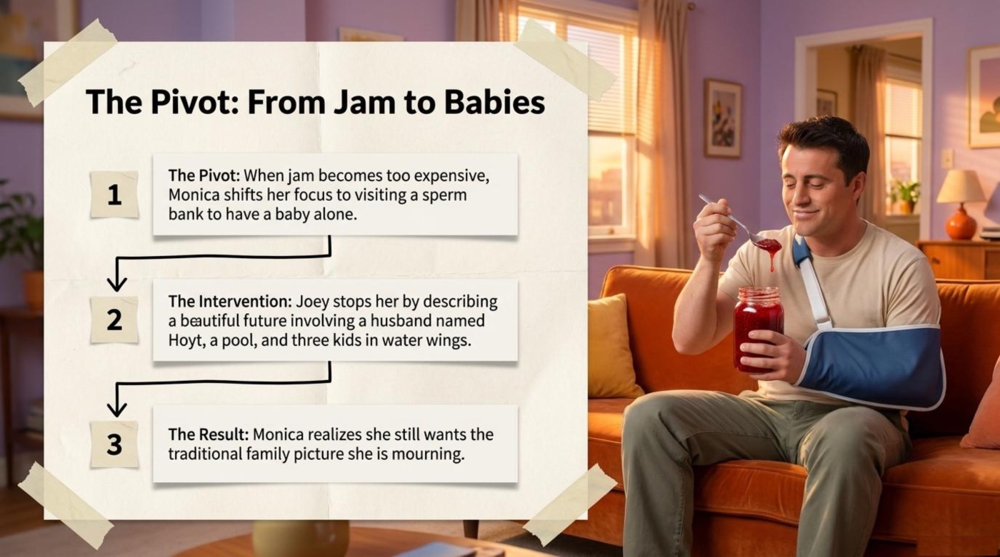
Pay attention to the phrase water wings, the inflatable armbands children wear in swimming pools. Joey’s painted future is deliberately childish and specific, and that specificity is what makes it persuasive. The material uses the detail to show how humor carries comfort: a man in an arm sling, eating jam straight from the jar, talks his best friend out of a radical decision by describing a backyard pool full of floating toddlers.
The bed boundary: fighting for space
The second storyline moves the battlefield to the bedroom. The deck states the problem with surgical clarity: “Chandler’s girlfriend, Janice, likes to cuddle all night. Chandler feels trapped and cannot sleep.” Here the lesson’s theme becomes physical. A bed is a small territory shared by two people with opposite needs, and the material names the conflict exactly as an adult should: one person is a cuddly sleeper, and the other is not. The proposed answer sounds like a military operation: “Ross teaches Chandler a secret physical maneuver to escape a sleeping partner without waking them.”
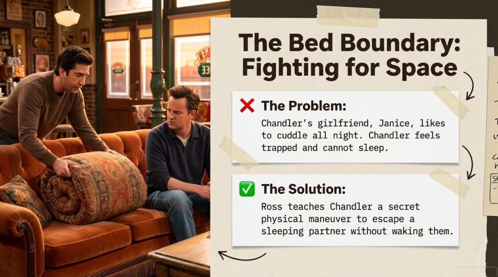
The maneuver itself gets its own gloriously over-engineered slide, presented like a secret technique from a martial-arts manual. The three steps deserve quotation in full, because they form a perfect miniature of English sequencing language. “Step 1: The Hug (Wait for partner to drift off).” “Step 2: The Roll (Move partner to the other side of the bed).” “Step 3: The Escape (Roll away to freedom).” The slide’s handwritten annotations — “Secret Trick!” and “Smooth!” — supply the tone of a co-conspirator sharing classified knowledge. 🎓 Those margin notes are the deck’s teaching voice at its most playful, and they reward attention because tone is part of vocabulary.
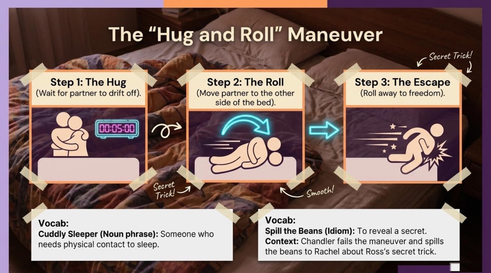
The punchline, of course, is failure, and the deck mines it for a second idiom. The vocabulary box explains that “Chandler fails the maneuver and spills the beans to Rachel about Ross’s secret trick.” To spill the beans means to reveal a secret, and the answer page of the deck stresses the point twice so that no learner walks away thinking the phrase describes dropped food. One failed bedtime maneuver, two idioms, one unforgettable image: that is efficient lesson design.
Language tip. Retell the Hug and Roll out loud using sequencing words: first, then, after that, finally. Instructional sequencing appears constantly in everyday English — recipes, meetings, directions — and a three-step maneuver about a bed is the lowest-stakes practice field imaginable.
The stalker: a boundary crossed
The third storyline drops the comedy several degrees darker. The deck titles it “The Stalker: A Boundary Crossed,” and structures it in three beats. The situation: “Phoebe realizes a man named Malcolm is following her.” The twist: “Malcolm thinks Phoebe is her twin sister, Ursula.” The mistake: “Instead of running away, Phoebe tries to cure Malcolm of his obsession by dating him.” The material follows this with a micro-reflection that nudges readers to explain why dating a person obsessed with your sister is a bad idea — an invitation to reason about consequences rather than laugh at them.
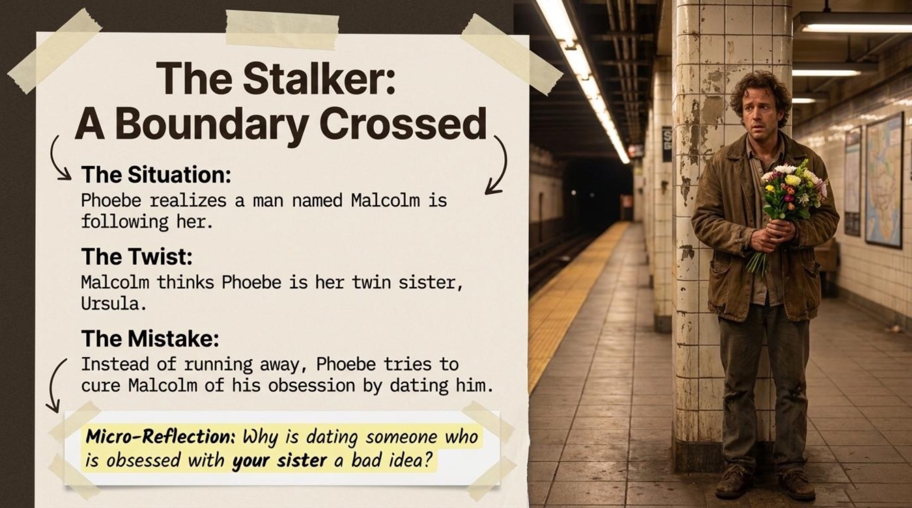
This storyline supplies the lesson’s heaviest vocabulary, and the deck treats it with unexpected seriousness. A restraining order is defined as “a rule from a judge telling someone they must stay a certain distance away from another person,” and the context line explains that “Malcolm has a restraining order to stay away from Ursula.” The second term, quit cold turkey, arrives with a built-in warning: “Phoebe made Malcolm stop following Ursula cold turkey, which caused him to relapse.” The margin note — “Back to his old ways!” — connects the idiom relapse to real-life habit change, where abrupt stops often bounce back. ⚠️ The material quietly teaches a safety lesson here: obsession is not cured by romance, and the legal vocabulary exists precisely because society needs formal words for informal dangers.
The scoreboard: coping and consequences
Near the end, the deck compresses all three storylines into a single analysis spread titled “Analysis: Coping & Consequences,” and the summary reads like a coach’s halftime whiteboard. Monica, listed with a broken heart, tries making seventeen-dollar jam and visiting a sperm bank, and the consequence arrow points to a bright outcome — “Realizes she truly wants a family,” annotated with the word “Clarity!” Chandler, listed with no sleep space, deploys the Hug and Roll, and the scoreboard records “Spins Janice off the bed; angers Rachel,” annotated “Whoops!” Phoebe, listed with her sister’s stalker, tries dating him to cure him, and the ledger closes with “Malcolm relapses; Phoebe breaks up with him,” annotated “Back to square one.” 🎓 The three handwritten verdicts — clarity, whoops, back to square one — are the material’s own commentary, and they grade each strategy not by effort but by result.
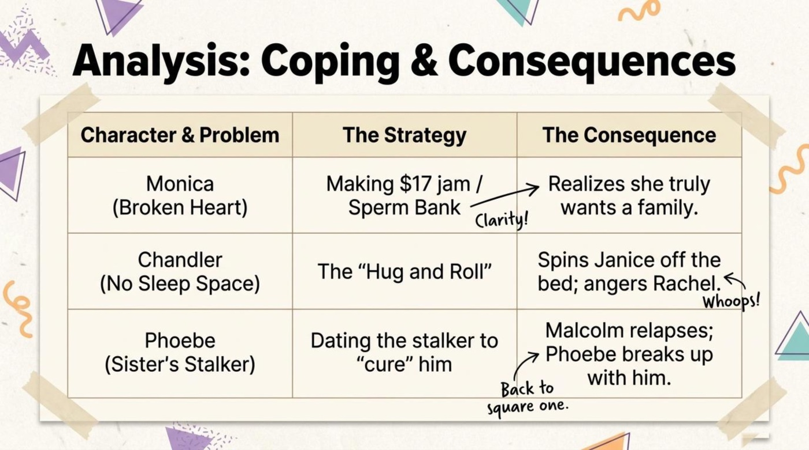
Notice the pattern. Only Monica’s clumsy coping mechanism leads somewhere useful, and it does so because other people help her interpret it. The deck’s verdict on human behavior is consistent: strategies fail, but honest conversations with friends can rescue even the strangest strategy.
🧠 The Vocabulary Toolbox: Eight Expressions Worth Stealing
The deck brands its word lists under the heading “Real-World Vocabulary,” and the label is earned. Every expression below appears in offices, courtrooms, bedrooms, and group chats, not in grammar drills. Each entry gives the literal picture, the figurative meaning, the exact example from the material, and the deck’s own explanation, so the phrase is anchored from four directions at once. Read the entries slowly, because the definitions are quoted verbatim from the AI-generated slides — these are the exact formulations a learner is meant to carry away.
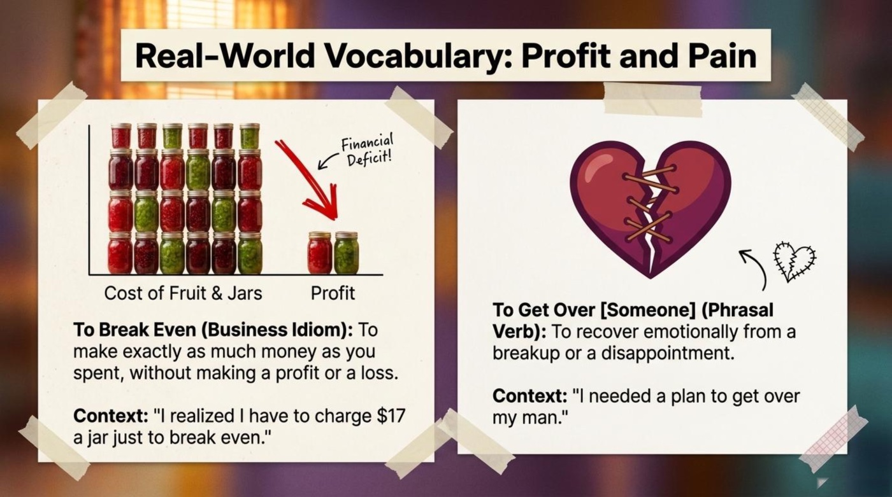
1. To break even — the business idiom
Literal meaning — In bookkeeping, the exact moment when the money coming in equals the money going out. The scales of a budget sit in perfect, slightly disappointing balance.
Figurative / contextual meaning — To neither win nor lose financially; to cover your costs and nothing more. People reach for the phrase when a project survives but fails to thrive.
From the material — “I realized I have to charge $17 a jar just to break even.” Monica discovers that fruit, sugar, and jars cost serious money while her friends eat the inventory for free, so her heartbreak project turns into a math problem with an ugly answer.
How the material explains it — The slide defines the idiom as “to make exactly as much money as you spent, without making a profit or a loss,” and reinforces it with a chart that stacks a tall wall of production costs against a two-jar sliver labeled “Financial Deficit!” The lesson teaches the phrase through definition, dialogue, and diagram all at once.
2. To get over someone — the phrasal verb of heartbreak
Literal meaning — To climb over an obstacle and continue on the other side of it.
Figurative / contextual meaning — To recover emotionally from a breakup or a disappointment; to stop hurting and move forward. The obstacle, in this case, is a person.
From the material — “I needed a plan to get over my man.” Monica’s plan, as the whole episode proves, is two hundred jars of jam — which makes the sentence both a vocabulary lesson and a gentle joke about the plans people make while grieving.
How the material explains it — The slide gives the definition directly: “to recover emotionally from a breakup or a disappointment,” and pairs it with an illustration of a broken heart stitched back together with thread. The image matches the meaning: getting over someone is slow sewing, not instant repair.
3. Cuddly sleeper — the noun phrase
Literal meaning — The compound joins cuddly (fond of hugging and closeness) with sleeper (a person who is asleep or trying to sleep).
Figurative / contextual meaning — A person whose sleep depends on physical contact; someone who wraps around a partner all night like ivy around a fence.
From the material — Janice’s all-night cuddling leaves Chandler trapped and sleepless, which is why he ends up learning a bedtime escape maneuver from Ross. The phrase names the habits of one character and the suffering of another.
How the material explains it — The slide defines it plainly: “Someone who needs physical contact to sleep.” The definition is neutral and kind — the deck never mocks the cuddler; it simply gives learners the vocabulary to negotiate a very common incompatibility.
4. To spill the beans — the secret-revealer idiom
Literal meaning — Picture a jar of beans knocked sideways across a table: the beans scatter, and no amount of scrambling puts them back in neatly.
Figurative / contextual meaning — To reveal a secret, usually by accident, so that it cannot be taken back.
From the material — “Chandler fails the maneuver and spills the beans to Rachel about Ross’s secret trick.” The failed bedtime escape becomes a confession, and Rachel’s anger becomes the punchline.
How the material explains it — The slide states the meaning as “to reveal a secret,” and the deck’s answer page doubles down: “It is an idiom that means to accidentally reveal a secret.” The repetition exists because learners routinely misread food idioms literally — the deck anticipates that error and corrects it before it forms.
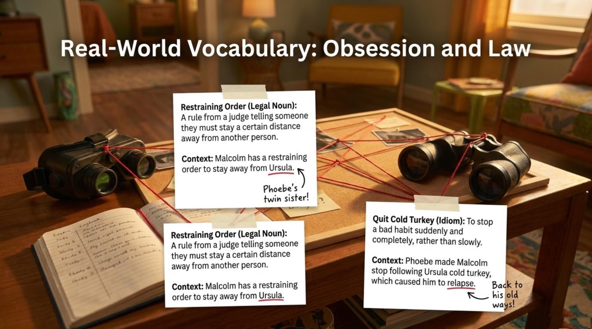
5. Restraining order — the legal noun
Literal meaning — An official court document with a judge’s authority behind it.
Figurative / contextual meaning — An invisible fence built around one person for the protection of another; the point where private discomfort becomes public law.
From the material — “Malcolm has a restraining order to stay away from Ursula.” The deck’s margin note, “Phoebe’s twin sister!”, explains the mix-up that drives the whole storyline.
How the material explains it — The slide defines the term as “a rule from a judge telling someone they must stay a certain distance away from another person.” Placing a legal definition inside a comedy lesson is a deliberate choice: learners get the serious vocabulary that surrounds a comic subplot, which is exactly how the phrase appears in news and drama.
6. To quit cold turkey — the habit-breaker idiom
Literal meaning — The image inside the idiom is stark and unappetizing: cold, plain turkey, served with no warm-up and no side dishes.
Figurative / contextual meaning — To stop a bad habit suddenly and completely, rather than easing off step by step.
From the material — “Phoebe made Malcolm stop following Ursula cold turkey, which caused him to relapse.” The abrupt stop works exactly as badly as abrupt stops usually do, and Malcolm returns to his obsession.
How the material explains it — The slide defines the idiom as “to stop a bad habit suddenly and completely, rather than slowly,” and annotates the consequence with “Back to his old ways!” — which quietly teaches the companion verb relapse in the same breath.
7. Coping mechanism — the psychology term
Literal meaning — A mechanism is a system of parts that performs a function; here the parts are habits and the function is emotional survival.
Figurative / contextual meaning — The mind’s emergency exit: anything from baking and running to scrolling and snacking that a person uses to keep functioning under stress.
From the material — Monica’s jam operation is the deck’s central exhibit: hundreds of jars, a ruined budget, and a heart that only starts healing when a friend finally talks to it.
How the material explains it — The theme slide defines coping mechanisms as “actions to deal with stress or sadness.” Giving learners a calm, clinical phrase for emotional behavior is quietly powerful — it lets people discuss mental health without drama.
8. Boundary — the relationship word
Literal meaning — A line drawn on a map that marks where one territory ends and another begins.
Figurative / contextual meaning — A rule for how people are allowed to treat you; the invisible line around your time, body, sleep, and feelings.
From the material — Chandler’s need for sleep space is a boundary negotiated (badly) with a maneuver; Malcolm’s stalking is a boundary shattered so completely that a judge has to redraw it.
How the material explains it — The theme slide defines boundaries as “rules for how people treat us.” The episode then supplies the full spectrum of the word — from trivial (bed space) to serious (a stalker) — which is the kind of range a single textbook example rarely manages.
🎮 Flip your way to fluency
The eight expressions above now become a deck of interactive cards. Tap or press Enter on any card to flip it over: the front shows the term and a teasing hook, while the back hides the literal meaning, the contextual meaning, the exact example from the material, and a note on why the expression matters. The cards are the centerpiece of this section for a simple reason — active recall, the small effort of remembering before checking, is one of the most reliable ways to move vocabulary into long-term memory.
🔍 Deeper Meaning: Four Symbols Hiding in the Jam
The strongest lesson decks work like good literature: objects carry ideas. This episode is unusually generous with such objects, and the material itself points at four of them. Each symbol turns an abstract psychological concept into something a viewer can see, count, or trip over — which is exactly why the vocabulary attached to those concepts sticks so well.
1. The jam jar — the visible price of avoidance
Jam is the episode’s master symbol, and the deck treats it as economics as much as emotion. The file calls the plan “Distraction from Heartbreak,” with the trigger “Breaking up with Richard” leading straight to “Making massive amounts of jam.” The choice of jam matters: it is countable, storable, and sellable, which lets the storyline quantify the unquantifiable. The cost of sorrow becomes a chart with a red arrow labeled “Financial Deficit!”, and the break-even quote — “I realized I have to charge $17 a jar just to break even” — turns heartbreak into unit pricing. The symbol teaches a sober idea in a sweet wrapper: distraction has a production cost, and eventually an invoice arrives.
2. The bed and the Hug and Roll — the geography of personal space
The bed is the smallest territory in the episode and the clearest demonstration of the lesson’s definition of boundaries as “rules for how people treat us.” The deck frames the conflict as a wall-style standoff — “Chandler feels trapped and cannot sleep” — and offers the maneuver as a solution: “Ross teaches Chandler a secret physical maneuver to escape a sleeping partner without waking them.” As a metaphor, the Hug and Roll is every silent workaround people invent instead of an honest sentence. The annotations “Secret Trick!” and “Smooth!” celebrate the workaround, while the consequence line — “Spins Janice off the bed; angers Rachel” — delivers the verdict that tricks have receipts. The symbol deepens the vocabulary: a cuddly sleeper and a space-needing sleeper are not enemies; they are two people who never stated their terms.
3. The binoculars and the red string — obsession made visible
The stalker storyline contributes the deck’s darkest imagery: a corkboard laced with red string, a pair of binoculars, and a man with flowers on a subway platform. The material defines the situation through law rather than comedy — “Malcolm has a restraining order to stay away from Ursula” — and describes the failed intervention as causing him to relapse, “Back to his old ways!” The red string on the board is the perfect visual pun for obsession: a thread that connects a person to a fixed point and will not let go. By pairing that image with a restraining order, the deck contrasts two kinds of lines: the thread obsession spins, and the boundary society draws. The mistake beat — “Instead of running away, Phoebe tries to cure Malcolm of his obsession by dating him” — completes the warning: boundaries are enforced, not negotiated with the person violating them.
4. The sling and the painted future — reality, adapted
The deck saves its most surprising symbol for a page titled “Behind the Scenes: Adapting to Reality.” The fact reads like trivia: “Actor Matt LeBlanc (Joey) dislocated his shoulder in real life while filming the previous episode by jumping on a chair.” The adaptation reads like a masterclass in flexibility: “TV writers had to instantly adapt. They wrote the sling into the script, creating a joke that Joey hurt himself jumping on his bed, and Chandler sold him out to the doctor.” The sling becomes a badge of resilience — an accident converted into comedy within a week. 📌 The same slide pair that shows the injury also shows Joey describing “a beautiful future involving a husband named Hoyt, a pool, and three kids in water wings,” and together the two images state the deck’s final thesis in pictures: reality breaks sometimes, imagination repairs it, and friends hold the glue. The conclusion slide says it outright: “true support comes from community.”
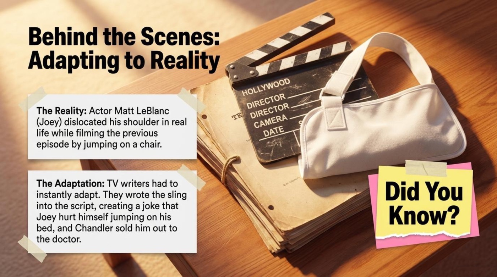
🎯 Comprehension Check
The original deck closes its lesson with a chalkboard quiz titled “Comprehension Check,” followed by an answer page that corrects every item and explains the reasoning. The interactive version below follows the same spirit and raises the stakes slightly: each answer earns instant feedback, a running score, and a short explanation drawn directly from the material. Eight questions cover the storylines, the idioms, and the main idea, and a wrong answer costs nothing but a small electric buzz of humility.
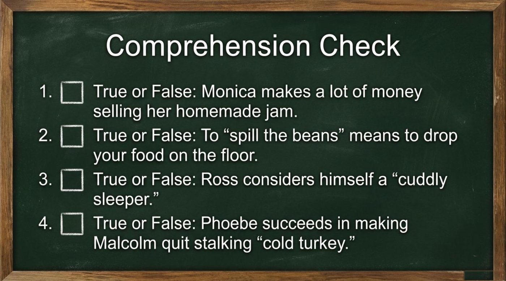
Final result
0/8
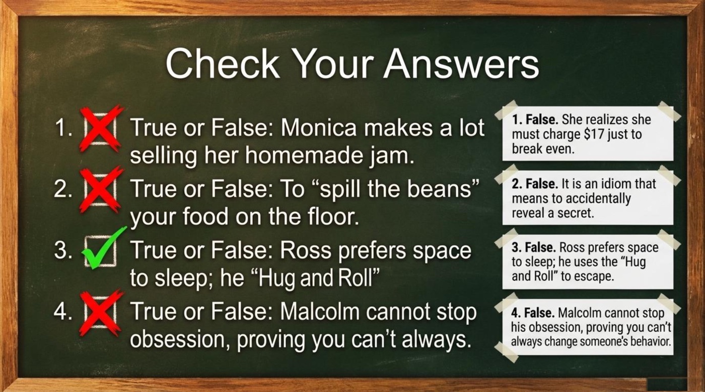
☕ Friendship as the Ultimate Cure
The deck’s final content slide deserves quotation in full, because it is the sentence the whole lesson was built to earn.
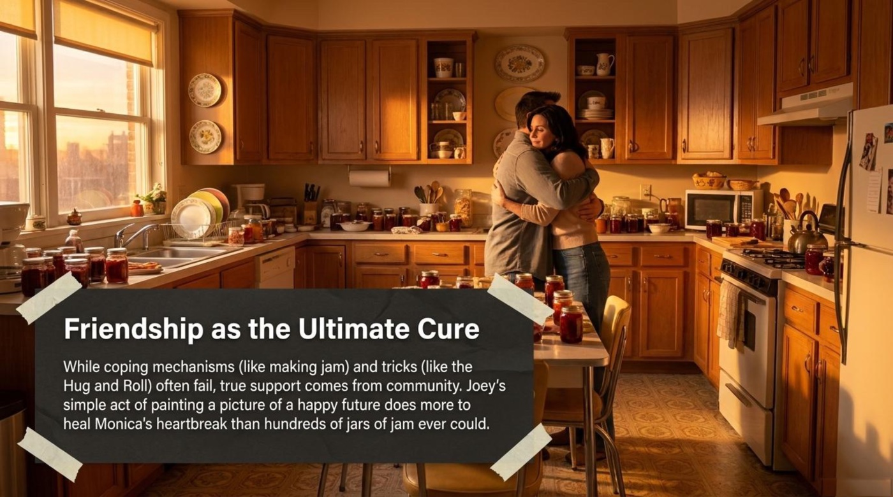
The takeaway for language learners follows directly from the material’s method. Words learned through stories attach themselves to faces, kitchens, and jokes, which is why break even is easier to remember next to a mountain of jars than next to a dictionary line. The main lesson of the episode doubles as the main lesson of the deck: strategies for surviving hard moments work better when they are shared, and language is the sharing mechanism itself. Learning the vocabulary of boundaries and coping is, in a small way, practice in being the friend who paints the picture of the happy future.
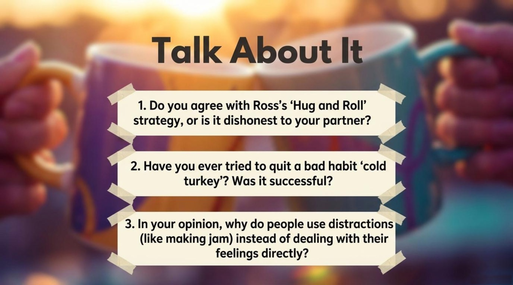
The closing slide, titled “Talk About It,” invites learners to take a position on Ross’s strategy, to recall their own experiments with quitting bad habits suddenly, and to explain why people reach for distractions instead of facing feelings directly. Each prompt works beautifully with a language partner, a tutor, or a voice recorder. The call to action is therefore simple: rewatch the episode with the eight expressions written on a sticky note, retell all three storylines out loud using trigger, response, and consequence, and answer the talk-about-it prompts in full sentences. Then return to the flip cards above, flip every card once more, and notice how much of the deck now lives in memory rather than on the screen.
📎 Lesson Files
All source material for this article comes from the public lesson folder. The original lesson deck below opens in a new tab for review and printing.
📄 303-friends-jam-english.pdf — the original lesson deck (opens in a new tab)